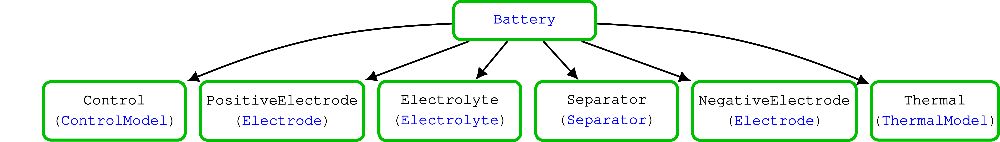
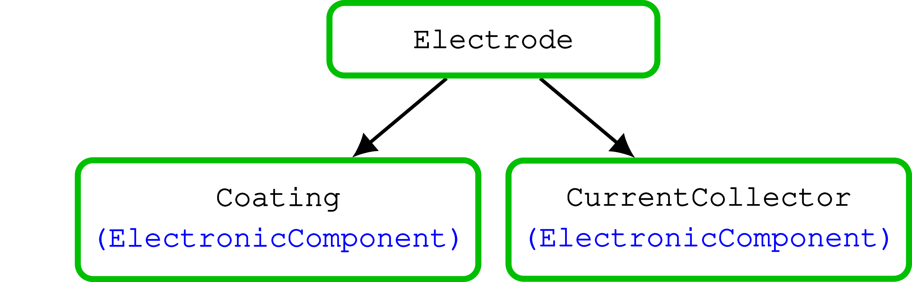
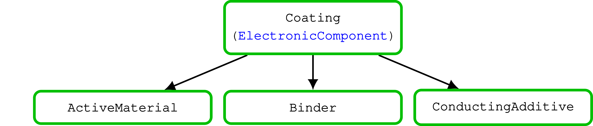
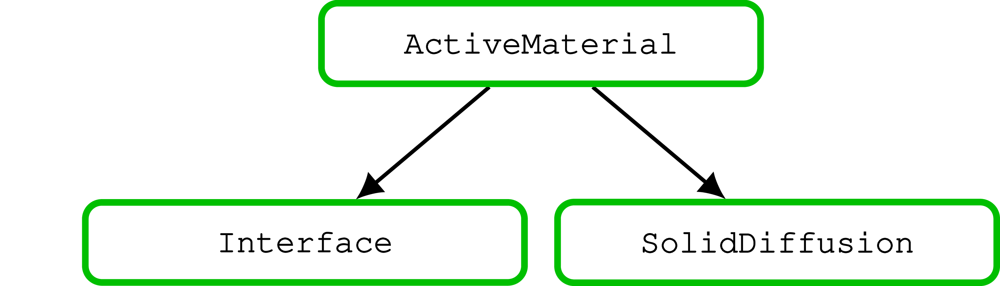

BattMo Model Architecture
We use a multi-model approach. The models are organized in a hierarchy, meaning that a given model can have sub-models. A model corresponds to a given physical system and defines the functions and variables that will be needed to assemble the discretized governing equations of the system.
For the simulation of Lithium-ion battery, we have at the top of the hierarchy a battery model (see schema for the description of the standard input parameters). The battery model contains the following sub-models:
Negative electrode model (schema)
Positive electrode model (schema)
Electrolyte model (schema)
Separator model (schema)
ThermalModel model (schema)
Control model (schema)
{kind=link}

The negative and positive electrodes are instances of the same electrode model. An electrode contains a coating material and a current collector. The standard input parameters for an electrode model are given in its schema. The electrode model has two sub-models:
{kind=link}

The current collector model is optional. In particular, for the 1D model it is in fact more realistic to not include it.
The standard input parameters of the coating model are given in the associated schema. The coating model has three sub-models, which corresponds of the three components of the solid:
{kind=link}

In the case of a composite material, the coating model will have a different structure, with two active material models.
The input parameters for the Active Material are described in the associated schema. The active material is organized in two sub-models.
{kind=link}

In the interface model, the function and variables that enter the reaction are defined (Butler-Volmer model). The solid diffusion model contains the functions to model and solve the diffusion equation in the solid. We have implemented two solid diffusion model, see here.
The Control (schema), Separator (schema) and Thermal (schema) models do not have sub-models. The control model is described in more details here. A example of a fully coupled thermal simulation is presented here.